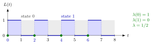

State-Dependent Arrival Rate¶
Definition¶
Say the system is in state at time when . Let
be the number of arrivals up to time that find the system in state , and the total time spent in state during . The state-dependent arrival rate is
assuming the limit exists: the number of arrivals per unit of time spent in state . When arriving jobs can be blocked, the entry rate counts only the arrivals in state that actually enter, , so .
Interpretation¶
The state-dependent arrival rate separates two questions that the overall arrival rate mixes up: how often the system is in state , and how intensely jobs arrive while it is there. A shop that customers avoid when it looks crowded has a high and a low , even if it is rarely empty.

The figure shows Example 1. The system alternates between one minute with a job (state ) and one minute empty (state ), so . All arrivals, marked by the green dots, occur in state : one arrival per minute spent there gives , while no arrival ever sees state , so . Over all time there is one arrival every minutes, so .
Three rates are easily confused. The overall rate counts arrivals per unit of total time, the fraction counts arrivals in state per arrival, and counts them per unit of time in . Counting in two ways links them: . The definition only makes sense for states that the system occupies a positive fraction of the time. Note also that is not the rate at which the system enters state ; that is plus the rate of departures that leave behind.
The rate generalizes the arrival rate of a Poisson process, for which in every state; this is the content of PASTA. Choosing , or the entry rate with blocking, is how the level-crossing equation turns a verbal description of a queue into its time-average distribution.
Key Results¶
- for every state , whenever the limits exist (Theorem 4.5.1).
- Since , the overall arrival rate is the time-weighted average (4.5.2).
- If , then ; Poisson arrivals have constant , which is PASTA.
- With blocking, an external Poisson stream still has , but the entry rate is zero in a full system; in an queue, for and .
- In a finite calling population of machines that each fail at rate while working, when machines are down; with balking the entry rate decreases in .
Examples¶
1. A periodic queue (Ex 4.6.6). Jobs arrive at , each needs one unit of service, and there is one server. Then on and on , so , and every job sees an empty system, so . With , and . Check: , and .
2. Two machines and one mechanic. Each of machines fails at rate per day while it works, and broken machines are repaired one at a time at rate per day, with exponential times throughout. A "job" is a failure, and is the number of broken machines, so , and , the minimum of independent exponentials adding the rates of the working machines. The level-crossing equation gives . Then failures per day, and , and : a machine that fails never sees both machines broken, although that state has time fraction .
3. Estimating from a sample path. For five jobs arriving at minutes with service times , the path spends , and minutes in states , and the arrivals see . The estimates are , and per minute. Weighting by the time fractions gives , which is indeed the overall rate of this path.
Prerequisites¶
- Arrival-Average State Probability
- Time-Average State Probability
- Arrival and Departure Rates
- Counting Process
Related Concepts¶
- Poisson Arrivals See Time Averages
- Level-Crossing Equation
- Birth-Death Queue
- Finite Calling Population
- Balking
- M/M/1/K Queue
- Arrival Rate
Sources¶
- Stochastic Operations Research · Week 4
- N. D. van Foreest, Sample Path Analysis and Simulation of Stochastic Systems, Section 4.5
Aliases: arrival rate in state n, state-dependent arrival intensity, lambda(n), entry rate, conditional arrival rate Keywords: \lambda(n), \lambda^{+}(n), A(n,t), Y(n,t), \lambda \pi(n) = \lambda(n) p(n), \lambda = \sum_n \lambda(n) p(n), arrivals that see n jobs, time spent in state n Symbols: infinity, integral, lambda, mu, pi, sum, theta
Last updated: 29 October 2026 20:42
State-Dependent Arrival RateBalkingFinite Calling PopulationLevel-Crossing EquationStationary-Probability RecursionArrival-Average State ProbabilityTime-Average State ProbabilityArrival and Departure RatesCounting ProcessPoisson Arrivals See Time AveragesBirth-Death QueueM/M/1/K QueueArrival Rate